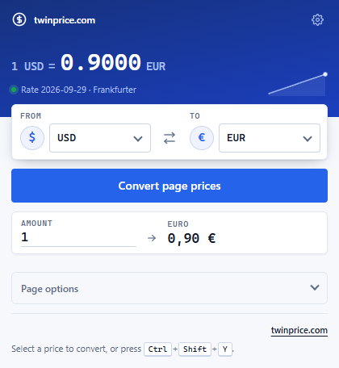

Adaugă Twinprice.
Instalează extensia gratuită din Chrome Web Store sau de pe Firefox Add-ons.
PUȚINĂ CLARITATE PENTRU COȘUL TĂU
Twinprice este o extensie gratuită de conversie valutară pentru Chrome și Firefox. Vezi prețurile convertite lângă cele originale în timp ce faci cumpărături sau selectează un preț și dă clic pe „Convertește selecția”.
CASĂ ȘI DECOR
Puțină lumină. Un birou mai plăcut.
UN SINGUR PREȚ E DE AJUNS
Selectează un preț și dă clic pe butonul albastru Convertește selecția care apare sub el. Același buton devine verde și îți arată rezultatul.
Demonstrație animată · Curs de exemplu: 1 € = 1,10 $.
Setează-ți moneda o singură dată.
Și fă mai puține calcule în minte data viitoare când cauți ceva.
Instalează extensia gratuită din Chrome Web Store sau de pe Firefox Add-ons.
Alege moneda pe care o cunoști. Lasă AUTO să detecteze moneda originală sau alege-o tu.
Deschide pagina unui magazin și convertește-i prețurile. Activează conversia automată pentru site-urile pe care le alegi.
Tot contextul de care ai nevoie.
Chiar lângă prețul la care te uiți.

Twinprice citește prețurile acolo unde sunt: în browserul tău. Paginile magazinelor tale nu trebuie să ajungă în altă parte.
Citește politica de confidențialitate completăDetectarea prețurilor și modificările paginilor au loc pe dispozitivul tău. Conținutul paginilor, valorile prețurilor și adresele vizitate nu sunt trimise furnizorului de cursuri.
Cererile de curs valutar către Frankfurter conțin coduri de monedă. Ca la orice altă cerere pe internet, serviciul poate primi detalii de rețea, cum ar fi adresa ta IP.
Accesul la pagini web permite extensiei să găsească prețurile acceptate și să ofere conversia. Oprește convertorul ca să oprești căutarea, mesajele și conversia automată.
Te mai frământă ceva?
Cere ajutor sau raportează o problemă.
Urmează ghidul de utilizare pas cu pas pentru conversia paginilor și a selecțiilor. Exemplele de cumpărături din el explică conversia din euro în zloți, simbolurile de dolar ambigue și diferențele la plată.
Deschide pagina unui magazin: Twinprice găsește prețurile acceptate și se oferă să le convertească. Ca să deschizi extensia, dă clic pe pictograma în formă de piesă de puzzle din bara de instrumente a browserului și alege Twinprice, apoi fixeaz-o ca butonul ei să rămână la vedere. În Firefox pentru Android, deschide meniul și alege Extensii.
Da. Twinprice se instalează și se folosește gratuit, fără cont. Extensia este open source și nu are trackere de publicitate sau de statistici.
Twinprice este disponibil pentru Chrome și Firefox pe computer și pentru Firefox pe telefoanele Android. Versiunea din Chrome Web Store funcționează și în Edge, Opera, Brave și Vivaldi. În extensie poți căuta monedele după nume sau cod. Conversia manuală folosește catalogul de monede active al Frankfurter; detectarea AUTO folosește un set mai mic, ales cu grijă. Perechile valutare disponibile depind de furnizorul de cursuri.
Da. Selectează un preț acceptat, împreună cu simbolul sau codul monedei (de exemplu, 89 €), apoi dă clic pe butonul albastru „Convertește selecția” de sub el. Butonul devine verde și arată rezultatul în moneda ta preferată. Poți și să dai clic dreapta pe prețul selectat și să alegi „Convertește prețul selectat”.
Funcționează cu textul de preț acceptat de pe paginile web obișnuite, inclusiv cu multe prețuri adăugate în timp ce navighezi. Prețurile din imagini, din cadre inaccesibile și din unele așezări neobișnuite nu pot fi convertite. Paginile de setări ale browserului și magazinele de extensii sunt restricționate. Dacă moneda sursă nu este clară, alege-o manual în fereastra extensiei.
Twinprice folosește cursurile de referință Frankfurter pentru o comparație comodă. Banca, emitentul cardului sau serviciul de plată pot folosi un alt curs și pot adăuga comisioane. Când nu există cursuri noi, se pot folosi cursuri recente din memoria cache; extensia avertizează după 48 de ore și nu folosește cursuri mai vechi de șapte zile. Demonstrația de pe acest site folosește cursuri fixe, date ca exemplu.
Da. După conversie, alege „Restabilește prețurile originale” în fereastra extensiei. În Opțiuni pagină, oprește „Convertește automat acest site” ca să uiți setările automate ale acelui site. Oprește „Activează convertorul” ca să oprești peste tot căutarea, mesajele și conversia automată.
MAI PUȚIN CALCUL ÎN MINTE. MAI MULT TIMP PENTRU VITRINE.
Adaugă un preț familiar la următoarea ta descoperire.
Instalare gratuită. Fără cont. Informații despre produs și editor.